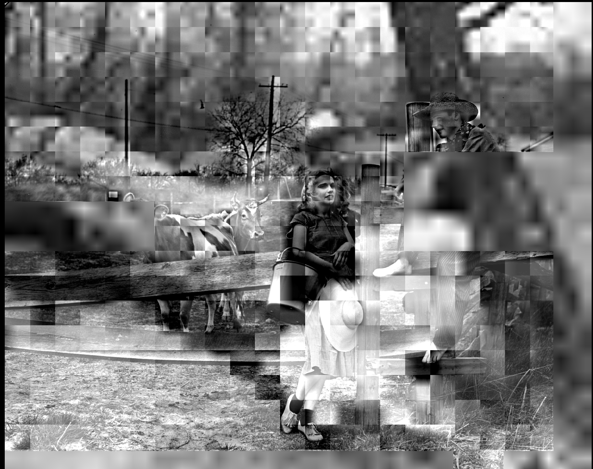

{
"published": true,
"layout": "post",
"title": "JP2 Conversions"
}Wanted to share a couple of hilarious and haunting images from creating and converting JP2s with the Kakadu JPEG2000 library. Full disclaimer: it is not the fault of Kakadu, it is most likely our free-wheeling, high-octane JP2 conversion approach we had in the pipeline for awhile.
Kakadu allows for tasks to get run over multiple processes, this is good! We also run these JP2 conversions with Celery, a background task infrastructure for Python. It is also not Celery's fault. Finally, we're queuing up multiple images for this pixel gauntlet. That, is most assuredly our fault.
The result, some pretty wild images. They are usually the combination of tiles and pixels from pictures nearby on the processing pipeline, at least that's my working theory for now.
